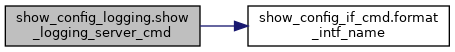

My Project
함수
show_config_logging 네임스페이스 참조
함수
def
show_logging_server_cmd
(render_tables)
함수 문서화
◆
show_logging_server_cmd()
def show_config_logging.show_logging_server_cmd
(
render_tables
)
show_config_logging.py
파일의
22
번째 라인에서 정의되었습니다.
22
def
show_logging_server_cmd
(render_tables):
23
serevrs = render_tables.get(
'sonic-system-logging:sonic-system-logging/SYSLOG_SERVER/SYSLOG_SERVER_LIST'
)
24
if
serevrs
is
None
:
25
return
'CB_SUCCESS'
,
''
26
27
commands = []
28
for
server
in
serevrs:
29
cmd =
'logging server '
+ server[
'ipaddress'
]
30
if
'remote-port'
in
server:
31
cmd += (
' remote-port '
+ str(server[
'remote-port'
]))
32
if
'src_intf'
in
server:
33
cmd += (
' source-interface '
+
format_intf_name
(server[
'src_intf'
]))
34
if
'vrf_name'
in
server:
35
cmd += (
' vrf '
+ server[
'vrf_name'
])
36
commands.append(cmd)
37
38
return
'CB_SUCCESS'
,
';'
.join(commands)
39
이 함수 내부에서 호출하는 함수들에 대한 그래프입니다.:

show_config_logging.show_logging_server_cmd
def show_logging_server_cmd(render_tables)
Definition:
show_config_logging.py:22
show_config_if_cmd.format_intf_name
def format_intf_name(intf)
Definition:
show_config_if_cmd.py:46
다음에 의해 생성됨 :
1.8.17
 1.8.17
1.8.17